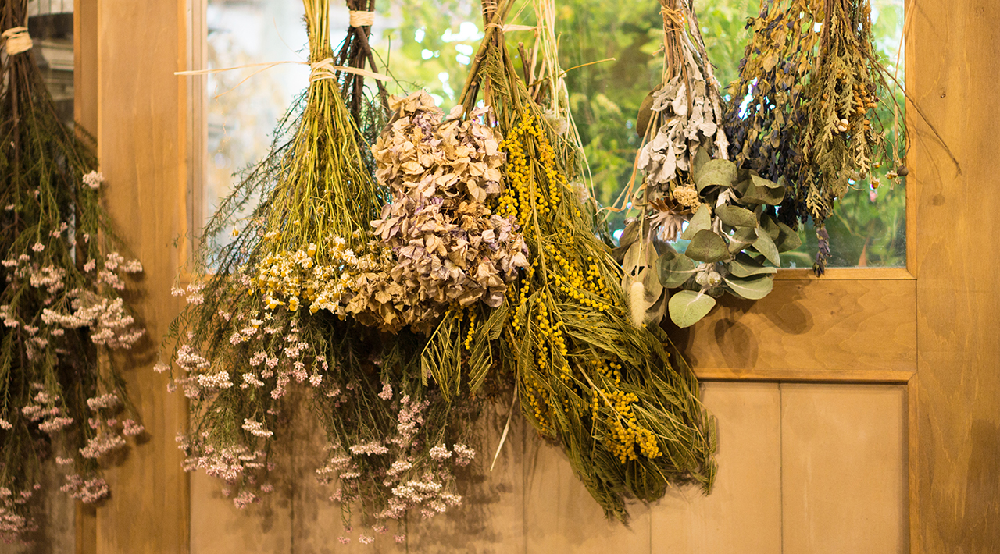
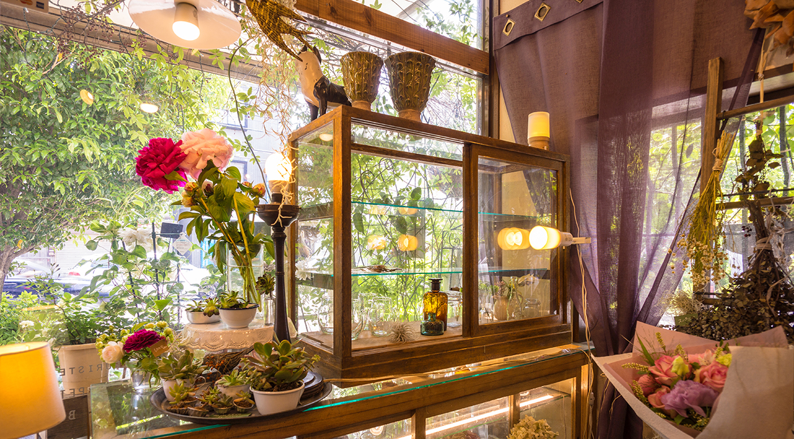
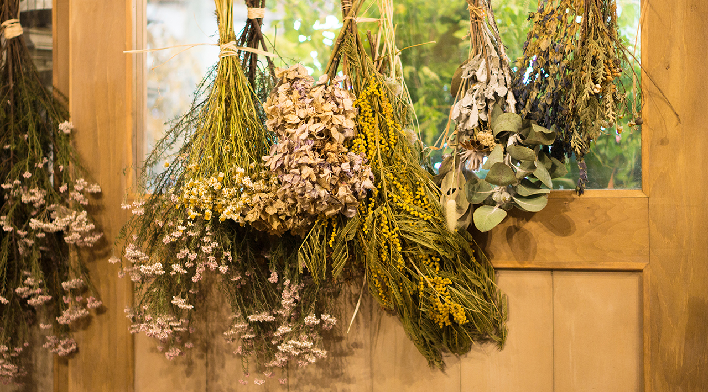
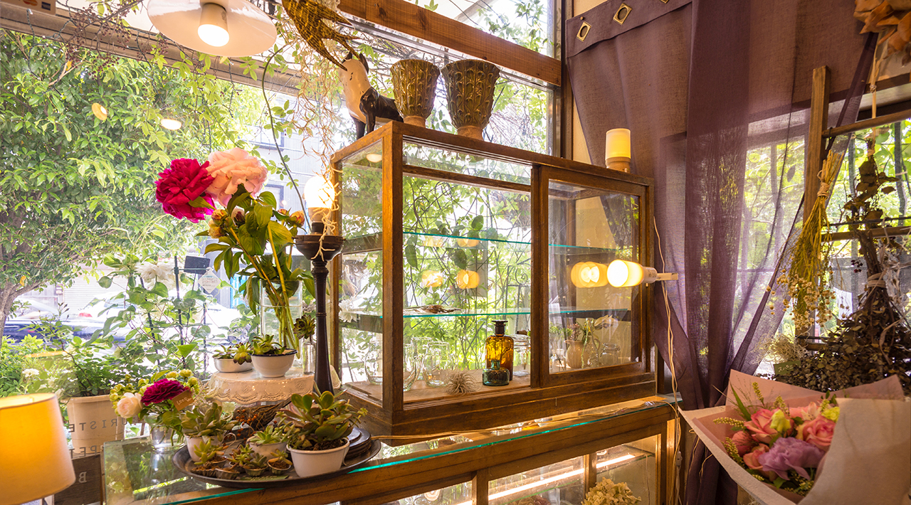
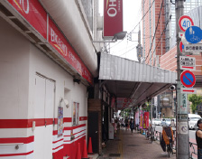
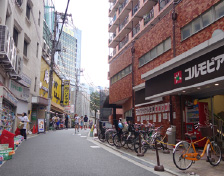

はなごや
渋谷駅 田園都市線・半蔵門線 改札徒歩 0 分
 





渋谷駅の改札を出て 0 分、つい寄り道したくなる「フラワースタンド」
田園都市線・半蔵門線からハチ公口へと乗り換える改札のすぐ近く「渋谷ちかみち」にあるお花屋さん「SUNFLOWER」。渋谷らしいカジュアルな雰囲気の花束を作ってくれます。
なんと言っても、乗り換え途中にさっと立ち寄れるのが嬉しい。
帰り道のコーヒースタンドでコーヒーを買うくらいの感覚でお花が買えるフラワースタンド。
なかでも、時折登場する国産ローズ 1 束 1000 円の花束は、個人的にもおすすめ!
いつもの帰り道に、今日はどんなお花が並んでいるかな?と、つい立ち寄りたくなるお花屋さんです。
営業時間 11:00~22:00(水曜定休日) ※ご来店前にお電話でご確認下さい。
- 三軒茶屋駅の「世田谷通り口」を出て
- 「ビッグエコーを」左手にしながら、世田谷通りを100メートルほど直進
- 「コルモピア」の角を左に曲がって、「肉のハナマサ」を通り過ぎると左手にあります。

- 
- 